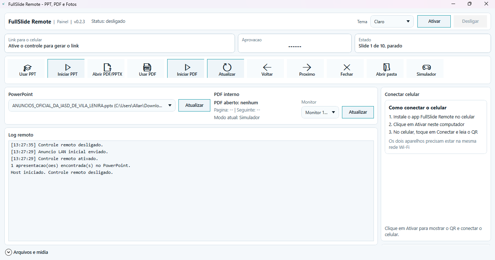
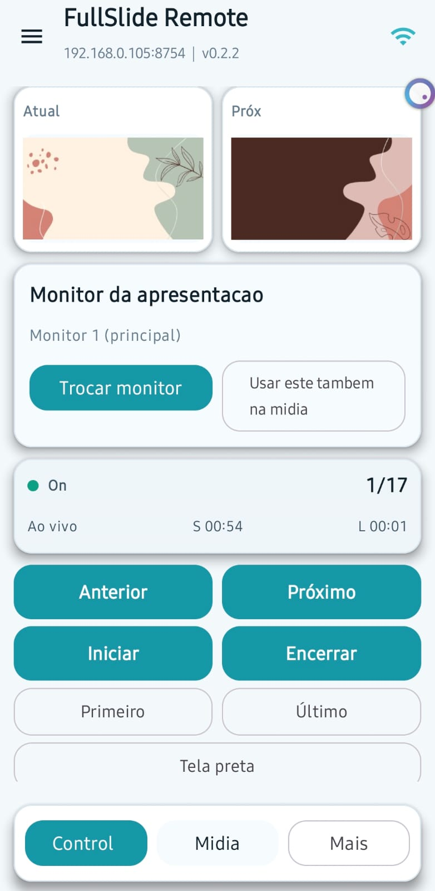

Baixe o app do computador
Baixe o pacote do Windows, extraia o arquivo e abra o FullSlide Remote no PC.
Use o celular como controle remoto para PowerPoint, PDF, imagens, áudio e vídeo. Baixe o Host Windows, abra no computador e conecte o app pela mesma rede.
O pacote do Windows é self-contained: extraia o ZIP e execute o Host no computador.


O fluxo foi pensado para qualquer pessoa conseguir usar em poucos passos.
Baixe o pacote do Windows, extraia o arquivo e abra o FullSlide Remote no PC.
Deixe PC e celular na mesma rede e leia o QR Code ou encontre o PC pela rede.
Use o celular para avançar slides, iniciar o PowerPoint e abrir mídia no PC.
Uma interface simples para controlar o que realmente importa durante a apresentação.
Avance, volte, inicie e encerre apresentações no PowerPoint ou PDF com poucos toques.
Abra imagens, vídeos e áudios diretamente no computador, com visualização e biblioteca simples.
Conecte por QR Code, por descoberta na rede local ou digitando o link do computador.
As telas abaixo mostram a experiência real no desktop e no celular.
Feito para ambientes onde o apresentador precisa focar no conteúdo, não no computador.
Controle letras, slides e mídia com mais liberdade no ambiente.
Use o celular como controle remoto rápido e fácil para apresentações ao vivo.
Apresente PDF e PowerPoint com mais mobilidade em sala ou auditório.
Fluxo guiado, conexão simples e botões claros para quem quer usar sem complicação.
Atualização com correção importante no PowerPoint, melhoria no controle de PDF e estabilidade validada.
Corrigido o problema ao iniciar apresentações do PowerPoint pelo app, onde a tela podia ficar cortada ou duplicada.
Agora:
Agora você pode usar o teclado para navegar nos PDFs:
Mais rápido e natural durante apresentações.
O primeiro passo é baixar o app do Windows. Depois, conecte o celular e comece a controlar.
Baixe o ZIP, extraia o pacote e abra o FullSlideRemote.Host.exe no computador.
O botão da Play Store já está preparado. Depois, basta trocar pelo link oficial do app.
Baixar na Play Store